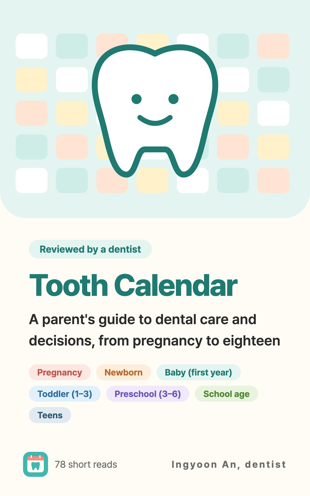

Knocked-Out Permanent Tooth: Put It Back In Right Away, or Bring It in Milk Straight to the Dentist
When a permanent tooth is knocked out, minutes matter. How to replant it without touching the root, what to do if you can't, and why baby teeth stay out.
At a glance
- Best option: put it back in right there
- Can't? Carry it in milk and go to a dentist right away
- Baby teeth are never put back in
A fall on the playground, the sports field, or the stairs can knock a child's front tooth right out. It's scary, but what you do in the next few minutes can save the tooth. Reading this once ahead of time will help you stay much calmer if it ever happens.
Why every minute counts
Accidents that knock out a permanent tooth are most common between ages 7 and 10. That's the age when the front teeth have just become permanent teeth, and when kids run, play, and fall a lot.
The surface of a tooth's root is covered with a very thin layer of living tissue that attaches the tooth to the jawbone. This tissue has to stay alive for the tooth to reattach when it's put back in place. But outside the mouth, it's damaged quickly if it dries out, gets rubbed by fingers, or sits in plain water for a long time. Drying out is the most harmful of all.
So the sooner the tooth goes back in its socket, the better its chance of survival. The best option is to put it back in right there at the scene, before you even head to the dentist. If you can't, put it in milk or saline so the root tissue is protected, and hurry to the dentist. Even if some time has passed, don't give up. Bring the tooth with you.
When an accident happens, it's easy for your mind to go blank. That's why it helps to read these steps once ahead of time and to know the phone number of a nearby dentist. If your child plays sports with bumps or falls, wearing a mouthguard is a good way to prepare in advance.
Follow these steps in order
- Calm your child.
- Hold the tooth only by the white crown. Don't touch the root.
- If dirty, rinse it with milk or saline, or if you have neither, very briefly with water (10 seconds max).
- Don't scrub it or use soap.
- If you're sure it's a permanent tooth and your child is fully alert and can cooperate, gently push it right back into the socket.
- Have your child bite on gauze or a handkerchief, and go straight to the dentist.
A few more tips. When you find the tooth, first tell the smooth, white crown apart from the long root. Turn it so the front faces forward, then push it in. When rinsing, don't rub it with your fingers. Just let the dirt wash off lightly. Once it's back in, have your child gently bite on gauze or a handkerchief so the tooth doesn't move.
If you can't put it back in:
- Put it in milk right away (or saline if you have no milk) and go straight to the dentist.
- If you have neither, even water is okay. It's better than keeping the tooth dry.
Still, water isn't a good storage liquid, so use milk or saline if you can get them. Milk is easy to find at a school cafeteria or a nearby store, so don't hesitate to ask another adult for help. The worst choice is wrapping the tooth in a tissue and carrying it dry. The root tissue is damaged as it dries. A common mistake is scrubbing or disinfecting the root to "get it clean." The root isn't something to wash. It's the part you need to protect.
Frequently asked questions
I can't tell whether it's a baby tooth or a permanent tooth.
At the age when front teeth are changing, it's easy for parents to be unsure. In that case, don't force it back in. Bring it in milk and let the dentist decide. Baby teeth are never put back in.
My child was crying too hard, so I couldn't put it back in.
That's okay. Don't force it. Put it in milk or saline right away and go straight to the dentist. Not being able to put it back in doesn't mean it's over.
If it doesn't hurt after putting it back, do we still need the dentist?
Yes. Even after putting it back in, go to the dentist right away. A replanted tooth needs regular follow-up afterward.
It's night or the weekend, and our dentist is closed.
Don't wait. Call a dentist who can see you now, or an emergency room, right away. On the way, keep the tooth in milk or saline. The chance of saving it drops as time passes, so hurrying is what matters.
The tooth didn't come out. It just broke.
A tooth that's broken or pushed up into the gum also needs a dentist right away. If you find the broken piece, bring it in milk.
Also go to the dentist right away when
- Your child hit their head and is drowsy, confused, vomiting, or having trouble breathing (the emergency room comes first)
- A permanent tooth was knocked out (whether or not you put it back in)
- A tooth is broken or pushed up into the gum
- A tooth that got hit is loose or looks out of place
- A replanted tooth needs regular follow-up

English ebook · Dentist Ingyoon An
A guide to the decisions behind dental care
Tooth Calendar follows dental care from pregnancy to eighteen in 78 chapters. Explore the reasons behind feeding, brushing, baby-tooth decay, sedation, and injury decisions—including what can be watched and when to seek help. Age-based contents and a topic index help you find the concern you have today.
Get these at the right time
Enter your child's birth date (or due date) in the Tooth Calendar app and these articles arrive as reminders when they matter. Free, no sign-up.
Sources
The information in this article is for general educational purposes and does not replace professional dental care. Talk to a dentist about your child's condition.